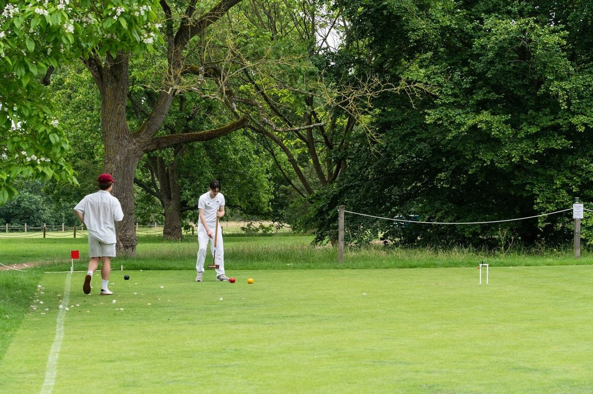
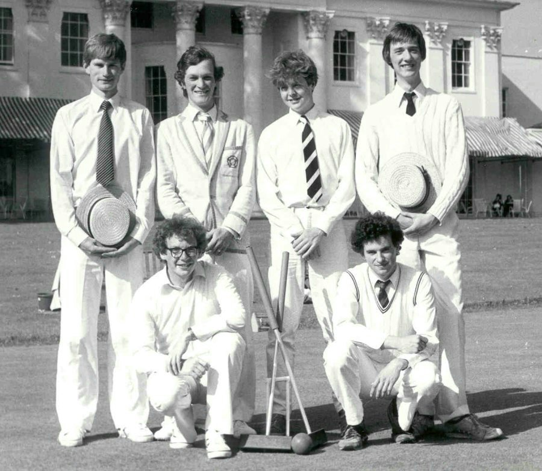

Oxford University Association Croquet Club
Association croquet in Oxford since 1867
Play on the University Parks courts, learn from experienced players, compete for Oxford and take part in one of the University's oldest sporting traditions.

Serious about croquet, open to everyone
OUACC brings together complete beginners, regular players and experienced competitors. Members have access to full-size courts, Club equipment, coaching and a programme of matches and competitions.

Croquet Cuppers
OUACC runs Oxford's inter-college croquet competition, bringing teams together from across the University.
Explore Cuppers
Varsity
The Club fields an Oxford team for the annual Varsity Match against Cambridge at the Hurlingham Club.
Explore Varsity
Play and improve
Start with introductory coaching, join Club evenings, enter competitions and progress at your own pace.
Learn the gameTwo full-size courts in the centre of Oxford
The Club's courts are in the University Parks. Members can book courts, use Club equipment and play throughout the season, subject to fixtures and coaching.
Find us
Come and play
Membership options, practical information and joining instructions are available here.